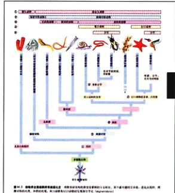
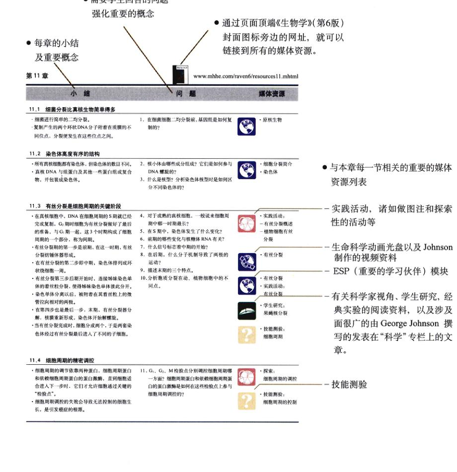
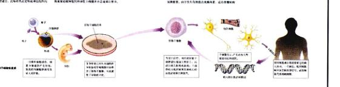

主编 (美) Peter H. Raven, George B. Johnson
主译 谢莉萍 张荣庆 张贵友
清华大学出版社
责任编辑 罗健
生物学：第6版 / (美) 拉弗 (Raven, P. H.), (美) 约翰逊 (Johnson, G. B.) 主编；谢莉萍，张荣庆，张贵友主译. —北京：清华大学出版社，2008.12
书名原文：Biology (Sixth edition)
ISBN 978-7-302-11337-9
主译 谢莉萍 张荣庆 张贵友
参译者 (以姓氏拼音为序)
贝锋锋 曹阳 陈松 陈业 丁娟 冯俏丽 付瑶鹏
龚宁萍 宫强 黄剑 黄明书 黄晓春 孔亚玮 李彪
刘畅 区健辉 舒骁 陶佳林 王希希 王雪 吴溪
吴志浩 解菲 徐烨 严实 叶欣 张超 张光
张曦元 张扬 张璋 赵晶晶 赵磊 周玉娟 朱程刚
朱彧
主校 谢莉萍 张荣庆 张贵友 佟向军 蒋高明
参校者 (以姓氏拼音为序)
陈蕾 陈洪涛 戴益平 范为民 房子 葛月宾 龚宁萍
胡轶霖 李清 李硕 麻彩萍 孟庆雄 任睽睽 王冠男
王琴 吴庭鹤 武振龙 熊训浩 徐广锐 闫振广 于振艳
张岑 周恒 朱方捷
本书译自麦格劳-希尔 (McGraw-Hill) 出版集团出版的《生物学》(第6版)。原著作者为美国著名的植物学家 Peter H. Raven 和 George B. Johnson。
全书分为一般原理和个体生物学两部分，共14篇，60章。分别阐述了生命的起源，细胞生物学，生物能学，繁殖与遗传，分子遗传学和进化，生态学和行为学，病毒和简单的生物，植物的形态、功能及其生长和繁殖，动物的多样性，动物体的结构与功能及调控等内容。内容广泛，几乎涉及了生命科学的所有领域，堪称生命科学的百科全书。
全书配有2000多幅精美的彩色插图，文字叙述深入浅出，简明扼要，既是一本教科书，又是一本科技读物。本书可供生命科学 (包括生物、医、农、牧、林学等) 专业的大学生、研究生和教师作为教学参考书，也可供对生命科学有兴趣的其他学科的科技人员阅读。
清华大学生物科学与技术系的一批优秀教师及研究生完成了《生物学》(第6版) 的翻译工作，这是一件十分令人欣慰的事情。
由美国华盛顿大学教授 Peter H. Raven 和 George B. Johnson 主编的《生物学》是一本权威的生物学教科书，自1982年出版以来，历经多次修订。该书内容丰富，覆盖面广，几乎触及了生命科学的所有科学领域。从微观到宏观，从个体生物学到种群、生态系统以及全球生态系统的研究，从传统生物学的发展历程，到现代生命科学的前沿领域——神经生物学、发育生物学等学科的进展无不涉及，堪称是一部生命科学的百科全书。作为一本教科书，它既注重基本概念和基本理论的阐述，又注重教学理念和教学手段的更新，借助互联网将纸质课本的内容延伸和扩展。它既有教科书的完整性、系统性，又充分反映了生命科学不同学科领域的最新研究进展。将该书翻译成中文并正式出版，让更多的读者成为该书的受益者，无疑是一件很有意义的工作。
负责翻译《生物学》的教师多年从事普通生物学的教学工作，他们在履行繁重的科研和教学职责的同时，组织完成这样一部巨著的翻译工作实属不易。其工作量之大、难度之高是可以想像的。中译本在内容上忠实于原著，文字流畅。负责翻译和校阅工作的师生对译文反复推敲，几经校对，表现出了一丝不苟的严谨科学态度和对读者的高度责任感。
我相信，《生物学》(第6版) 中文版的出版将为从事生物学教学、科研和学习的师生提供一部极好的教科书，也将为广大的生物科学的爱好者提供一个很好的科技读本。它将为我国生命科学人才的培养和生物科学知识的普及与传播起到积极的推动和促进作用。
翟中和
中国科学院院士
北京大学生命科学学院教授
2008年1月
在《生物学》中文首版在中国发行之际，我很荣幸地向中国的学生们推荐这部书。
我与中国有着很深的渊源，1936年我在中国上海出生，不过，我在中国只待了极其短暂的时间。后来，随父母回到了美国的加利福尼亚，在那里我长达成人，并成为一名科学家。
我对出生地的第一次科学回访是在1981年，自1987年开始，我担任了《中国植物志》编撰委员会的联合主席 (co-chairman)。1994年，我荣幸地成为中国科学院的外籍院士，因此享有更多的机会访问中国许多美丽的地方。在过去的25年中，我平均每年访问中国2~3次，或进行合作研究，或举办讲座。
当前，生命科学正处于前所未有的飞速发展时期，在此时使用这本教科书学习生物学的中国学生是很幸运的。我与合作者乔治·约翰逊 (George Johnson) 教授两人从事生物学教学工作的年限加在一起已经超过70年了。在我们的记忆当中，生物学从未像现在这样充满生机。
我们的生物学教学学涯始于20世纪60年代，那同样也是一个令人兴奋的年代。在那个变革的时代，包裹基因的黑匣子被打开了，科学家第一次向人们揭示了 DNA 是如何保持生命特征的稳定性和多样性的。40年来，生物学家们放大了那张蓝图，更深入地了解了生命的运行机制。
从1982年开始，我和乔治·约翰逊就开始着手编撰此书，我们第一次尝试按照课堂讲授生物学的方式来阐释生物学，这是一个明显的改进。当时美国的多数生物学教科书都是将进化的内容分散到少数几个不同的章节来论述。事实上，进化贯穿于生物学的始终。例如，你细胞中的线粒体具有明显的细菌特征，光合作用和糖酵解具有生物化学的相似性，还有那些控制发育的基因的进化等，类似的例子在生物学中随处可见，你可以看到达尔文正在注视着你。如今，大多数美国的教科书的编写方式都或多或少采用了我们的这种思路。
20多年来，我们的教科书已经发生了很大的变化，从中可折射出生物学的巨大变革。这本书的内容已经更加接近分子生物学，正如生物学本身的发展那样。尤其是本书的很多篇幅都是阐述分子生物学和发育生物学——这样一些发展迅猛的前沿学科的进展。但我们依然保留了用基本的、进化的观点来解释生物学的做法。例如，这一版中，有些章节介绍了目前迅速发展的基因技术，但也安排了新的章节介绍有关利用植物基因组学来研究基因和发育的控制机制的进化。这正是一个例证，当我们试图引导学生全面、系统地理解生物学时，我们力图从多个组织水平来整合生物学的问题和研究方法。
最近十年来，我们已经连续几次修订《生物学》。当科学家们第一次知道如何进行基因操作时，生物学研究的步伐便大大加速了。在农业方面，它在成功地创造了巨大商机的同时，也引起了广泛的争议；在医学方面的进步也获得了普遍的赞誉。无论你如何看待基因工程，它都已经明显地从根本上改变了生物学。
伴随着《生物学》的问世，我们跨入了一个新世纪。新世纪的第一年，人类基因组计划已经完成，其全序列的破译为生命科学的研究和探索提供了便利条件。
2000年，人类第一次通过克隆获得了胚胎干细胞，为脊髓病和糖尿病等许多疾病的治疗提供了契机。一种经过遗传改良的金黄色大米，由于加入了一个基因元件从而克服了缺少维生素A和铁的缺陷，并首次在亚洲地区种植。神经生物学家首次揭示了学习的分子基础。即使是像分类学这样一个保守的学科领域，似乎也在经历着一场巨大的变革，分子系统学研究迫使人们重新绘制生物科属的进化树。
生物学这些变化的根本的重要性体现在哪里？我们欣喜地发现，它具有影响我们人类健康乃至整个世界的潜能。作为一门科学，生物学研究不再仅仅简单地去动动物园参观，也不仅仅是单单地形去动物形态及其生存状况。当然，这些也是生物学的重要研究内容之一，是生物学的核心知识内容。但是，我们不能仅仅停留于此。近十年所获悉的有关生物学的知识，已经为我们提供了一个史无前例的强有力的工具，借此可以改善人类的生存状况，减缓人类对所有生物共同居住的地球的影响。
基于上述对生命科学的深刻认识和美好祝愿，我和乔治将《生物学》(第6版) 奉献给广大的中国读者。
Peter Raven
密苏里植物园园长
美国华盛顿大学教授
2007年12月28日
(谢莉萍 译)
经过5年的努力，《生物学》(第6版) 终于可以付梓印刷了。我们怀着惴惴不安的心情期待着它与读者见面。回顾本书翻译工作所走过的历程，我们不禁感慨万千。
《生物学》(第6版) 是由美国华盛顿大学 Peter H. Raven 教授和 George B. Johnson 教授等主编的一部鸿篇巨制。全书分为一般原理和个体生物学两部分，共14篇，60章。该书自出版以来，已历经多次修订。该书的作者都是在大学从教多年的教授，既是某些科研领域的著名专家学者，又是杰出的教育学家。
《生物学》是一本权威的专业教科书，该书内容丰富，覆盖面广，几乎涉及了生命科学的所有学科领域，兼有教材和科普书籍的双重功能。该书篇章结构的设计都是从学习者的角度出发，采用了模块式的讲授方式。既强调基本概念和系统生物学思想的阐述，又反映了各学科研究的最新成果。同时还提供了相当丰富的网络资源，包括一些虚拟的、互动的学习平台，使教科书的内容得以拓展和延伸，并能即时更新。
我们几位主译都是多年承担普通生物学教学工作的教师，在教学过程中，深感国内相关专业教科书的欠缺。2002年初，我们与清华大学出版社协商，决定组织翻译《生物学》(第6版)，出版彩色中文版《生物学》。同年，我们将该书列为我系普通生物学课程的教学参考书。
《生物学》的翻译工作是一项浩大的工程，前后历时近4年的时间。该项工程于2002年初开始启动，其间曾因其他原因搁置了一段时间。先后有30多位本科生、硕士生和博士生参加了本书的翻译和校阅工作。负责本书主译的老师都身兼数职，承担着繁重的教学和科研任务，完成如此浩大的工程实属不易。张荣庆教授负责本书翻译工作的总体部署和协调，谢莉萍副教授负责具体的组织和实施，两人还同时承担了主译和主校的工作。
在翻译的过程中，我们尽量忠实原著的规范性和严谨性。在此基础上，采用通俗易懂的语言和符合中文阅读习惯的表达方式，努力做到行文流畅，对遣词造句精雕细凿，将原著丰富的精神和内容传递给读者。我们本着严谨的科学态度和对读者高度负责的精神，对译稿反复校对。参加校阅工作的除了清华大学生物科学与技术系的3位老师——谢莉萍副教授、张荣庆教授和张贵友副教授外，我们还邀请了中国科学院植物研究所的蒋高明研究员对本书有关生态学的内容进行校阅，邀请了北京大学生命科学学院的佟向军副教授对本书细胞生物学的内容进行校阅。
所有的名词专业术语的翻译都依据科学出版社出版的有关生物学的专业词典，如全国科学技术名词审定委员会审定的《英汉-汉英生物学名词》、《英汉生物学词汇》、《细菌名称》、《英汉-汉英生态学词汇》、《拉汉英种子植物名称》和《新拉汉无脊椎动物名称》等系列工具书。对于新近出现的疑难名词，我们采取十分慎重的态度，仔细对照原文反复推敲，才试定译名。一般的人名、地名都采用原文的名称，除非是一些著名的学者、地点才翻译成中文名称。
中文版《生物学》是清华大学生物科学与技术系师生团结协作的结晶，它记录了我们共同经历的挫折、艰辛和成功的喜悦。我们要衷心感谢所有参与本书翻译工作的清华大学生物科学与技术系9字班和0字班的同学们，包括在...
翻译前期参与协调工作的李鑫同学；还要特别感谢参与本书后期校阅工作的清华大学生物科学与技术系海洋生物技术研究所的研究生们，没有他们的参与和支持，要完成如此浩大的翻译工程是难以想像的。清华大学出版社为本书的出版提供了强有力的经费资助并做了大量的工作，最终使我们拥有一本彩色中文版《生物学》巨著的梦想得以实现。本书的责任编辑及出版社的其他相关工作人员为本书的出版都付出了辛勤劳动，他们高度负责的精神和忘我的工作作风令人钦佩，在此我们一并表示真诚地谢意。
建议读者在翻阅本书有关章节之前，先阅读本书的英文版前言，以便了解作者的写作意图，更好地使用本书，充分利用其提供的丰富网络资源。
由于本书涉及面广，内容庞杂，尽管我们竭尽全力，但囿于知识、能力、经历和水平，仍然难免会有诸多疏漏和错误，对此，我们恳请读者朋友给予谅解。如能得到专家和读者的批评和指正，我们将不胜感激。
生命科学是21世纪自然科学的带头学科，它与国民经济和人民生活密切相关。我们相信，彩色中文版《生物学》的出版将会让更多的国内读者了解到生命科学的发展历史及其现状，无疑将会为生物学知识的传播和普及起到积极的推动作用。
谢莉萍 张荣庆 张贵友
清华大学生物科学与技术系
2008年于清华园
在跨入新世纪之际，《生物学》(第6版) 问世了。新世纪的第一年，人类基因组计划已经完成，其全序列的破译为生命科学的研究和探索工作提供了便利条件。2000年，人类第一次克隆获得了胚胎干细胞，为脊髓病和糖尿病等许多疾病的治疗提供了契机。一种经过遗传改良的金色大米，由于加入了一个基因元件而克服了缺少维生素A和铁的缺陷，并首次在亚洲地区种植。神经生物学家首次揭示了学习的分子基础。即使是分类学这样一个保守的学科基地，似乎也在经历着一场巨大的变革，分子系统学研究迫使人们重新绘制生物科的进化树，从被子植物到昆虫和其他节肢动物。
目前，生物学正处于一个前所未有的令人振奋的时期。Raven 和我从事生物学教学工作的时间加在一起已经超过70年了，但我们都不曾记得生物学的发展经历过类似今天这样充满希望的时期。我们的教学生涯始于20世纪60年代，那同样也是一个令人兴奋的年代。在那些变革的年代里，包裹基因的黑匣子被打开了，人类第一次揭示了DNA是如何保存生命基本特征的恒定性和多样性的。40年来，研究者们已经放大了那张蓝图，了解了有关生命本质的更多详尽的内容。
在过去的几十年中，当我们第一次知道了如何进行基因操作时，生物学研究的步伐便大大加快了。随即在农业生产上引发了一场争论，在医药方面的进步却受到普遍的赞扬。但是，无论你如何看待基因工程，有一点是毋庸置疑的，那就是基因工程正在从根本上改变着生物学。
生物学这些变化的重要性体现在哪里？我们欣喜地发现，它具有影响我们人类健康以及整个世界的潜能。作为一门科学，生物学必须但不仅仅是简单地去动物园参观和调查生物的生存状况。当然，这些也是生物学的一部分研究内容，它们提供了生物学的核心知识内容。但是，我们不能仅停留于此。近10年所获悉的有关生物学的知识，已经为我们提供了一个史无前例的强有力的工具，可以用来改善人类的生存状况，减缓人类对所有生物共同居住的地球的影响。
正是基于对这样一门充满生机和希望的学科的上述认识，我们在跨入新世纪的第一年推出了第6版《生物学》。
一本成功的教科书的每一次修订工作，都是源于更新那些快速发展的研究领域的内容。同样，《生物学》第6版的最初计划也是更正已有的错误，并整合一些迅速发展的研究领域的新发现。在出版的文本中，这已经是一个很“显著”的修订了。然而，事实上并未局限于此。受审稿人建议的启发，我们又增加了一些章节，对重要章节的组织方式也进行了大幅度修改，同时补充了越来越多的素材——很快我们便进入了实质性的重要修订工作。
第6版的修订工作大多集中在进化、生态学、植物学，以及那些有可能取得显著成就的领域。为了修订这些章节，我们聘请了两位年轻的充满朝气的生物学家提供最新的研究进展。他们带来了新方法、新思想，以及他们所擅长的研究领域中的最新知识。与他们合作共事非常愉快，在未来的修订版中，他们仍将作为本书的共同作者。
Jonathan Losos 教授，是我们在华盛顿大学的同事，他负责修订了本书中有关进化和生态学部分的内容，在讨论部分引入了更多的实验科学的内容。这次修订的一项重要工作，就是在引出某些最重要的结论和概念的同时，提供了大量的实验数据。其目的是更好地帮助学生理解这些概念是如何从研究中获得的。因此，你会发现这些章节的图表非常丰富。
Carleton 大学的 Susan Singer 教授负责修订植物学的相关章节。植物学部分得益于一些最新的研究进展，其中植物发育生物学是核心部分。这位植物发育生物学家将传统的进化的植物形态和功能的影响的分析放在发育部分进行讨论，当进化仍然作为解释维管组织、种子、花和果实的特征的原因时，这些器官的发育过程就显得更为突出了。这不仅不会削弱而且会加强进化的特征。纵观植物学部分，新增的主要内容是植物分子生物学方面的进展，了解植物体形态和功能的分子基础可以使学生更清楚地理解进化的变化。
在本书的第5版中，有关保护生物学的内容作为一个个“拓展的章节”，仅在生物学的网站上进行了讨论。读者对这部分内容的反响非常热烈，促使我们将其加入新版中。在课堂教学中，我们发现学生们对自然资源的衰减问题尤其敏感，迫切需要了解解决这些问题的具体措施。我们认为，集中一个章节重点讲述保护生物学将受到学生欢迎，而且也有益于教学。
正在迅速发展的基因组研究领域对于生物学的未来将产生重大影响，为此，我们感觉到有必要在第6版中以某种方式加以讨论。若仅仅在课本中添加一个章节似乎很难担此重任，因为书中可能概括的内容，其中很多在一年后都将发生变化，于是，我们又转而采用“拓展的章节”的方式。在第5版《生物学》中，我们曾采用拓展章节来扩充保护生物学的内容，现在已将其纳入第6版的正式文本中。有关基因组学的拓展内容出现在网址：http://www.mhhe.com/raven6。这一新的章节是在探讨基因技术的基础上拓展的，它呈现和说明了基因组学所取得的最新进展。当各门课程进行到该部分内容的时候，我们将着重阐述这些信息对生命科学的重要性，及其对医药、农业和其他领域的深远影响。
在本书每篇的开始，我们都增加了一个以提问为基础的学习体验过程。学生可以通过考察某一个实验实例，从而体验开展科研工作的具体过程。在简要回顾所提出的重要性之后，我们将带领学生体验这个具体的实验过程，深入讨论实验设计方案，简要描述实验结果并进行结论。这是学习体验的第一部分。学生还可以进入第6版《生物学》的网页进行深入的实验探索。首先，学生可以阅读已经发表的科研论文，更加深入地理解原始文献。然后，学生便可以进行“虚拟实验”，他 (她) 能够调整实验参数，并获得用于分析的实验数据。我们提供了在线提问和讨论，以帮助学生更好地理解实验背后的思考过程。
若想进一步了解实验的详细内容，请进入网上虚拟实验室：
www.mhhe.com/raven6/vlab.mhtml
除了对生态学、进化和植物学部分的内容进行全面的修订，增加了有关保护生物学的新章节之外，我们还对本书的其他部分进行了彻底的修订。由于采纳了评阅人的意见，本书的许多章节已经完全不同于第5版的编排形式。本书还改进了某些讲述方式，如在讨论生物的多样性部分，始终保留了一个系统发生树的图标，以便向学生清晰地阐明每个类群在生命树中所处的位置 (见第35~37章和第44~48章)。
本章的组织结构有一些变化，将脂类放在了糖的前面，极大地改变了人们对于大分子的生物学重要性的认识，也使得相关内容更易学习。
关于生命起源学说的讨论更加开放，强调竞争假说以及那些缺少数据的推测的重要作用。
本章的内部编排结构都已经过调整，以便学生更容易理解本章所涉及的众多概念之间是如何关联的。
本章已经过重新编排，在本章的前段整合了人类遗传学的内容，并以人为以例解释了孟德尔定律。
我们将细胞发育的内容移至本书的前段，紧随其达之后进行讨论，以强化重要的分子生物学概念。
本章突出了癌症研究方面的最新进展，重点强调操纵代谢和血管发生的基因。
本章增加了一些新的主题，如生物芯片和转基因水稻等。一些发展迅速的领域 (如干细胞和伦理道德与规范) 的相关内容也已经更新了。
本章扩展的内容包括有关马的进化的全面讨论，还就人工选择作为物种进化的一种选择动力进行了讨论。
我们增加并扩充了有关种群分布、分布区和离散的机制的内容，并以翔实的数据为例说明了人类的影响。
本书扩充了这两章的内容，并将其并入生态学部分，这样更符合讲授的逻辑。
本书充分讨论了有关热带地区物种间的相互作用，以及物种的丰度如何影响群落的稳定性这样一些有争议的问题。
本章扩充了有关环境变化引起进化反应的讨论内容。
本书增加了有关“植物的绿藻起源假说”的内容。
增加了有关气孔、毛状体、根组织和叶的发育基因等内容。
本章经过彻底地重新编排，增加并扩充了许多标题，如生长素的酸生长假说、植物的防御反应、器官再生和冠瘦瘤所涉及的细胞分裂素、油菜类固醇和寡糖精、转基因西红柿、开花启动和生物钟等。
本章增加了有关后生动物体制进化的分子评价。
有些新的分子水平的数据对基于外部形态特征的传统的分类学提出了质疑。
增加了运动模式的讨论并与相关的概念结合在一起讲述。
新增加了一节——心脏病，指出心脏病是可以预防的，应尽早建立一种有益于心脏健康的生活方式。
扩展了本章的覆盖面，包括了一些哺乳动物感觉系统的例子。
本章完全重新编排，以便阐述得更清楚，也更易理解。现在呈现的标题是按照体内免疫反应的过程排列，更符合逻辑。
本书共分14篇，其中每一篇的引言部分都列举了一个实验。这些实验虽然不一定是最著名的，但是科学家们每天都在做的真实的实验。同学们如同与研究者们并肩工作，再也没有比这更好的方法能让学生们欣赏到科学研究的进程了。
第1篇 Kellar Autumn, Rober Full ——揭开壁虎抵抗重力的奥秘。
第2篇 Richard Cyr ——植物细胞是如何决定生长方向的？
第3篇 Andrew Webber ——蛋白质怎样协助叶绿素进行光合作用？
第4篇 Julian Adams ——为什么种群中某些基因有不止一个常见的等位基因？
第5篇 Randall Johnson ——肿瘤会被饿死吗？
第6篇 John Endler, David Reznick ——了解正在进行的进化。
第7篇 Mark Boyce ——为什么赤道地区的鸣禽生蛋少？
第8篇 Andrew Blaustein ——找出残害两栖动物的真凶。
第9篇 Michael Houghton ——发现丙型肝炎病毒。
第10篇 Robert Boyd, Scott Martens ——为什么有些植物能够富集有毒的金属？
第11篇 John Schiefelbein ——植物根发育模式的控制。
第12篇 Jon Harrison ——蜜蜂如何散热？
第13篇 Elizabeth Brainerd ——为什么蜥蜴要作深呼吸？
第14篇 Louis Guillette ——污染物会影响佛罗里达短吻鳄的性发育吗？
为了让学生进行深入地探索研究，上述每个实验都在互联网上有极其丰富的内容展现。下面以第8篇为例，说明如何更好地理解这个实验——为什么两栖类种群数量急剧减少，而且无数个体遭遇发育畸形。通过访问第6版《生物学》的虚拟实验室的相关实验 (www.mhhe.com/raven6/vlab8.mhtml)，学生可以做以下工作：
1. 阅读原始文献 Blaustein, Andrew R. et al., “环境紫外线B辐射导致两栖类胚胎畸形”. Proc.Natl.Acad.Sci. USA 1997 vol. 94:13735 ~ 13737。
4. 阅读其他相关的论文 如 Blaustein, Andrew 等撰写的论文“紫外线修复和阻止太阳紫外线 B 与种群衰减有关吗？”, Proc.Natl.Acad.Sci. USA 1994 vol. 91:1791 ~ 1795。
2. 进行虚拟实验 学生可以进行虚拟实验，搜集和处理数据，回答与实验相关的重要问题。
5. 进行虚拟实验，模拟相关论文的实验过程 我们给学生提出了第二种假设，可以通过另一个虚拟实验来证实。
3. 相约研究者 查看主要研究者 Andrew Blaustein 的相关资料，如个人简历、主页及论文目录。
6. 文献和相关资料 访问互联网可阅读其他相关论文，以及由 George Johnson 撰写的发表在“科学”专栏中的相关论文。
由衷感谢 William C. Ober 和 Claire Garrison 在本书再版过程中添加了大量全新绘制或精心修改的彩色插图，使本书的美术编辑质量又一次得到提升。Bill 出众的艺术技巧、丰富的生物学知识及其早年从事医师工作所积累的经验，对本书的前后6次编辑出版工作皆大有裨益。在从事科学插图的绘制工作之前，Claire 曾是一位熟练的儿科和产科护士。Bill 和 Claire 绘制的原创插图得到了广泛的认同，并且获得了下列机构所颁发的多种奖项：Association of Medical Illustrators, American Institute of Graphic Arts, Chicago Book Clinic, Printing Industries of America and Bookbuilders West，同时他们也是美术编辑奖的获得者。
本书作为一本生物学教科书，我们希望它除了内容涵盖面广、权威性强外，还能用一种生动有趣更加吸引人的方式来表述生物学。为了实现这个目标，作者需要收集大量的信息，了解相关领域的对究进展，以便能够在前一版的基础上不断进行更新和完善。也正是因为许多人的努力和贡献，才有了本书的第6版。在本书的首页和这篇序言的作者介绍部分，大家可以看到，有两位新同事参与了《生物学》(第6版) 的修订工作。Jonathan Losos 主要负责有关环境和生态学的章节，他在讨论部分加入了更多的新近研究成果，使本书更具权威性。Susan Singer 为植物学部分再次修改担负了艰巨的任务，她为植物学各章节增加了最新的研究进展。没有他们的工作，再版也不能够如此顺利。Eric Strauss 对生物多样性的相关章节进行了全面的审阅，并对修订和更改提出了诸多建议。对于生物学教科书来说，视觉效果是非常重要的。本书的精美插图是由 Bill Ober 和 Claire Garrison 设计并完成的。我们也要感谢檬图片艺术中心的 Don 和 Joan Murie，他们对本书各版的照片进行了出色地处理。当然，我们同时也感激那些来自全国乃至全世界的同行们，是他们为本书第6版的修改方案提供了大量宝贵的建议。衷心地感谢你们！
新版《生物学》的一个主要特点是，仍然将信息置...
于概念模块中进行陈述。将4位作者所撰写的内容连同图和表，按照要求呈现在不同的概念模块中，这是一项不小的业绩。没有全程策划编辑 Megan Jackman 的努力，这项艰巨的任务就无法完成。她的聪明才智和坚持不懈的精神为确保本书的高品质起到了重要的作用。在修订过程中，Liz Sievers 也加入了全程策划工作，她的帮助和支持获得了很高的赞誉。正像每一位作者所了解的，一本教科书并不是由作者独立完成的，而是由一个出版团队在运作。他们引导着作者将撰写的初稿经过为期一年的修订、编辑、润色，直至出版印刷。此次再版我们非常幸运地能够与这样一支工作团队共事：主编 Patrick Reidy，策划编辑 Lu Ann Wesis，项目主管 Peggy Selle，企划主管 Stuart Paterson，图片研发协调员 Lori Hancock，还有许许多多辛勤工作的幕后人员。
我们同样要感谢所有妻子和家人们的支持，由于本书再版修订工作的压力，我们不能时常陪伴在她们身边。她们已经习惯了我们陪伴的生活，并深知这是编写教科书必须付出的一种潜在代价。
我们还要感谢使用不同版本《生物学》的历届学生们，我们在向他们传授知识的同时，也从他们那里获得了同样的启示。
最后，我们要感谢本书的审稿人。每一本教科书都离不开那些使用、审阅该书的遍及全国的大学教师的支持。作为探测错误的灵敏天线和新技术的传播者，审稿人是作者最可信赖的助手之一。新版《生物学》中的许多修订部分都是直接遵循他们建议的结果，我们真诚地感谢他们当中的每一位。
位于每章的最后，并与相关的丰富的学习工具相关联。
通过该页底部的 BioCourse 网址的图标，可以链接到一个包罗万象的生命科学的资料库，这是一个专业的学术资源库。
为了帮助学生更好地掌握基本概念，本书采用了一系列独立的学习模块的编排方式。每一模块占1~2页的篇幅，结束时配有小结。每章开始时的要点概述代表了本章的概念框架，使学生很容易抓住这些概念之间的相互关系以及本章的主题。现已证明，这种模块式的组织形式是一种非常有效的使学生掌握关键思想的方法。
